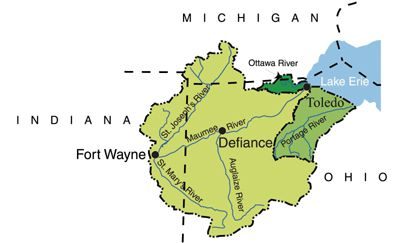

The EPA Region 5 Nutrient Load Reduction Model is used statewide to analyze and model all the assisted conservation practices that are implemented through assistance from the ICP staff. Practices do not include the many unassisted practices designed and installed solely by a private landowner without ICP assistance. While this model is project-specific, it provides a valuable perspective on a larger scale when showing the collective reductions of practices across several programs. Click on the map to view results of the nutrient load reductions in the Western Lake Erie Basin and see the graphics below.
To view additional information on the nutrient load reductions, please visit the Indiana Nutrient Reduction Strategy website.

Western Lake Erie Basin Domestic Action Plan Advisory Committee